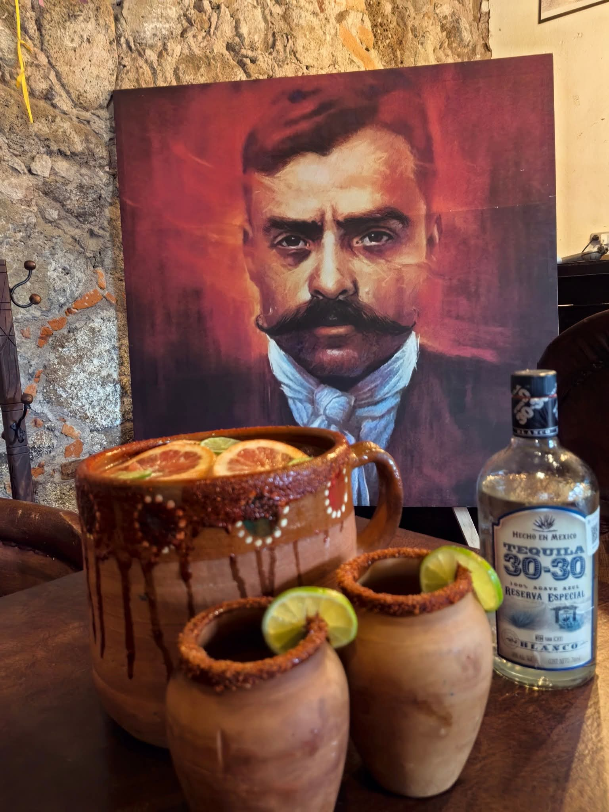
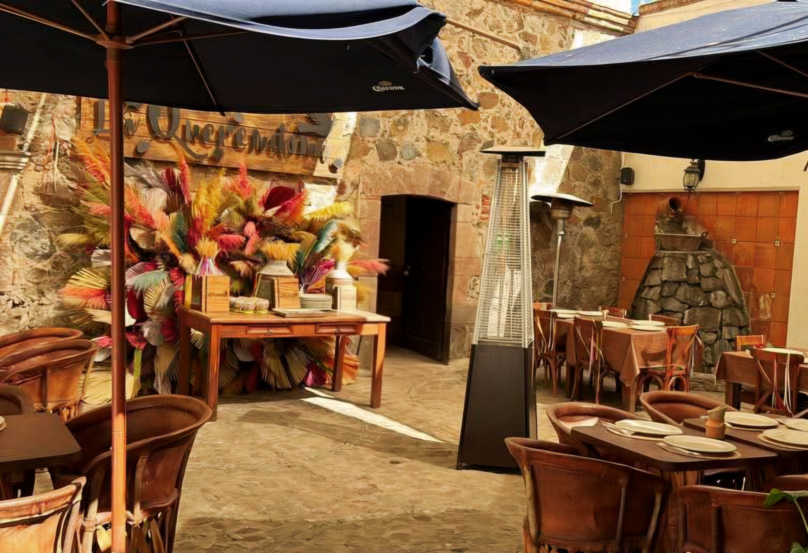
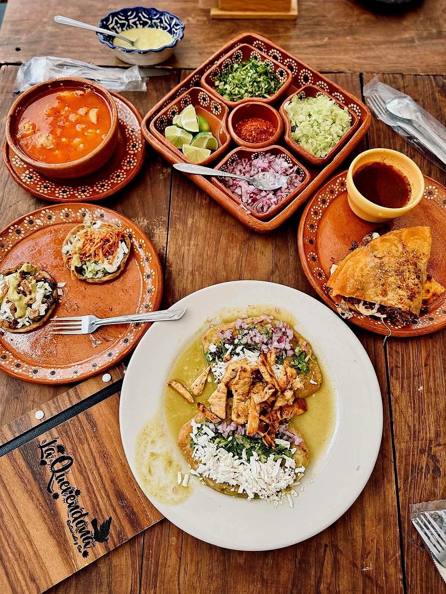

Resaltar la cocina tradicional mexicana
Somos un restaurante que busca ofrecer una experiencia culinaria que celebre la riqueza de la cocina tradicional mexicana, cuidando la técnica, el arte en la preparación y cada detalle del servicio.
En La Querendona compartimos la riqueza de la cocina tradicional mexicana con calidad, hospitalidad y sabor casero.

La Querendona fue fundada en 2021 bajo la inspiración del Sr. Horacio Molina Silva, con la visión de crear un espacio especializado en comida típica mexicana.
Nuestra primera sucursal abrió en Ciudad Sahagún, Hidalgo, y posteriormente llegó la sucursal de Tepeapulco, conservando el estilo mexicano, el menú, la coctelería y el sazón casero que nos distingue.
Hoy seguimos creciendo con el mismo propósito: ofrecer platillos inspirados en la gastronomía mexicana y una experiencia cálida, familiar y relajada.
Trabajamos con identidad, pasión y compromiso para preservar los sabores tradicionales de México y brindar a cada comensal una experiencia de calidad.
Somos un restaurante que busca ofrecer una experiencia culinaria que celebre la riqueza de la cocina tradicional mexicana, cuidando la técnica, el arte en la preparación y cada detalle del servicio.
Aspiramos a consolidarnos como un referente de la gastronomía tradicional mexicana, preservando sus sabores y tradiciones con autenticidad, calidad y confianza.
Fortalecer nuestra presencia en la región mediante un crecimiento estratégico, manteniendo la calidad de nuestros productos, el reconocimiento de marca y una experiencia que haga sentir a cada cliente cobijado por la esencia de México.
Preservamos la esencia culinaria de la cocina tradicional mexicana en cada platillo.
Compartimos con clientes y colaboradores la inspiración por la gastronomía y las tradiciones mexicanas.
Buscamos distinción y excelencia en nuestros productos, procesos y servicio.
Brindamos una experiencia acogedora para que cada cliente se sienta cobijado por la esencia de México.
Promovemos un ambiente cordial donde se honra la diversidad, se cuidan nuestras tradiciones y se ofrece un trato justo.
Queremos que cada visita se convierta en una experiencia memorable llena de sabor, comodidad y tradición.

